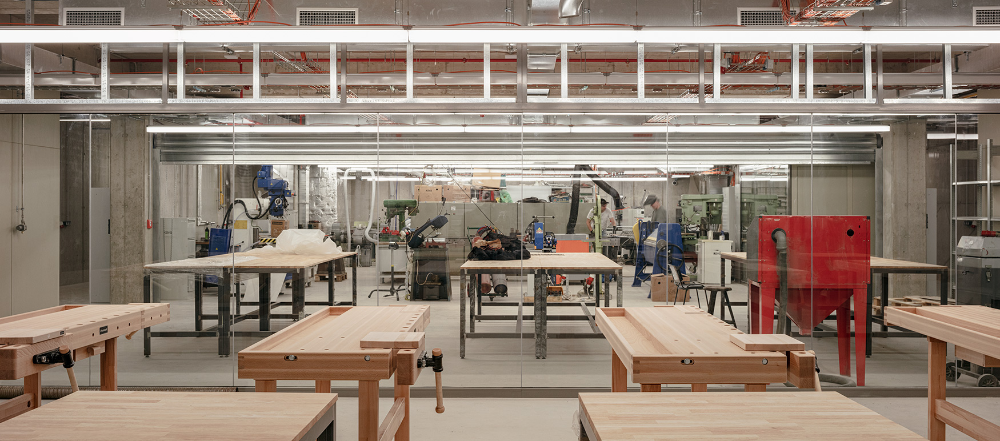

The UMPRUM workshops provide students from individual studios with a wide foundation for their project’ realization. The workshops offer a space for material and technological experiments. The high standard of craft production is ensured under the professional guidance of the workshop managers. UMPRUM students may use several above-standard workshop facilities in the areas of graphic art (gravure, serigraphy, offset, lithography, bookbinding), glass casting and grinding, carpentry, ceramics, stucco, metal, jewellery, fashion, clothing and footwear, textile, model making (CNC, laser, vacuum pressing), photography, postproduction, and film and animation.
The list of all workshops and the workshop managers’ contacts can be found on the UMPRUM website and here.
Only one workshop, i.e. Lithography, remains in the main UMPRUM building in Náměstí Jana Palacha till January 2026. The rest of them were moved from the old building to the new UMPRUM building called the Technology Centre Mikulandská 5, Prague 1. The brand new UMPRUM detachment designed by two of the former UMPRUM architecture professors (Ivan Kroupa and Jana Moravcová) houses 22 workshops and you can easily reach the place by tram (No. 18, 2, Národní třída stop) or walk.
At UMPRUM, we use 4-point grading system, with grade 1 as the best, and 4 as the worst.
If you earn grade 1, it means your performance was “excellent” and you got A+, A, and A-. Grade 2 means your performance was “very good”, which is equivalent to grade B+, B, and B- . Grade 3 stands for C+, C, and C- and evaluates your performance as “good”. In case your grade is 4, it means you failed (F) because your performance was “insufficient and unsatisfactory”. If you fail an exam or a state exam, you have two more attempts to pass them. If you get F for your klauzura/ semester work, you have one more attempt to repeat it.
However, those are not the only grades you can earn for your klauzuras (end-of-semester projects) and for the work during the semester. The studio and the jury evaluate your work and performance by giving you the following score: 12, 11, 10 points (A+, A, A-, grade 1); 9, 8, 7 (B+, B, B-, grade B), 6, 5, 4 (C+, C, C-, grade C) and 3–0 (F, grade 4 or 5).
IMPORTANT:
In all the cases mentioned here, you will have to formally apply by submitting a filled-in application form to the VA Coordinator by specific deadlines (usually mid-September, mid-January). The form can be downloaded on the VA intranet. The form must be signed by the head of your studio in case you want to repeat the academic year, repeat your klauzura presentation, interrupt your studies, postpone your diploma, and do an Erasmus exchange for one semester. If you want to do a one-semester internship and transfer to another studio, the form must be signed by the head of your studio and the head of the other studio you are going to study in.